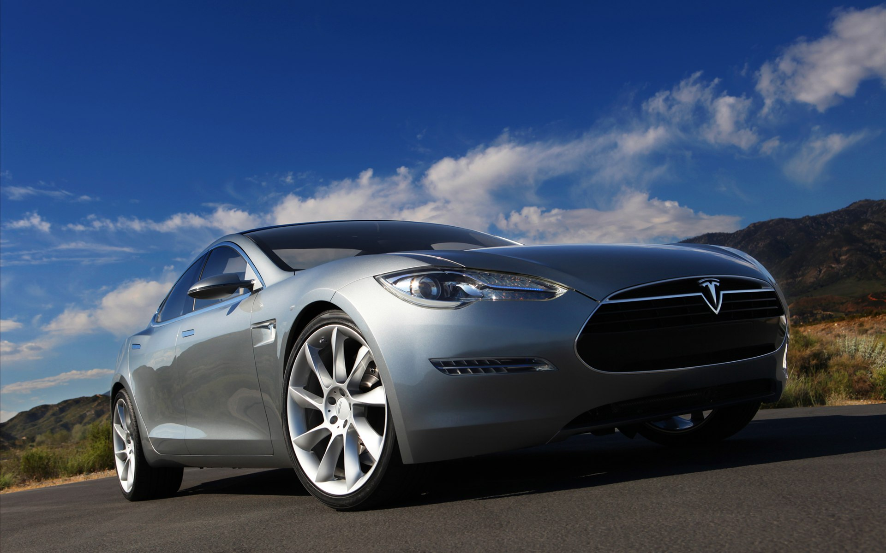
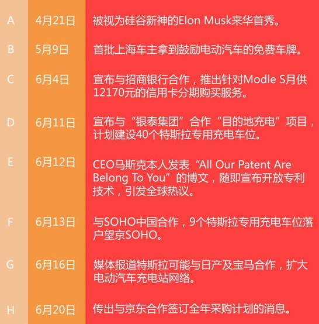

聊特斯拉之前，先想到这么一个问题：对商业化一直慢热的新浪微博来说，可否借鉴百度“品牌数字资产榜”的思路，推出一个“品牌话题资产榜”呢？
搜索大数据OR社交大数据，谁能发挥到极致，都有领跑品牌营销的巨大价值；而现在行业也普遍意识到，营销中重要的已不是曝光，而是成为大家的“谈资”；既然如此，将企业的“谈资制造力”数据化为“话题资产”，帮助品牌来加以研究分析，导入运营，是否会给微博商业化带来帮助呢？
现在，假设微博真的推出了这个“话题资产榜”，那我有充足理由相信，在TOP10的榜单上，特斯拉肯定可以确保前三无虞。

不信？我们来对这个品牌近期制造的“谈资”做个大致梳理：

特斯拉品牌营销技术分析与点评
所有这些，可能还不是全部；在不到两个月的时间中，有如此高密集的话题传播，不得不说特斯拉中国市场的营销是经过了缜密的布局、设计，又配合了出色的BD、PR拉动的。
尝试分析下这其中的几项细节“技术”：
A、组织符合用户认知习惯的“故事”
显然，特斯拉对用户的核心顾虑做了细致深入的研究。
比如，针对充电设备滞后的短期硬伤，该公司6月12日放出“开放专利技术”的大招，其后不到一周，6月16日，即有特斯拉与日产、宝马合作充电站的新闻传出，盘整许久的股票应声逆转，当日大涨逾8个点。
这里有一个不易觉察的逻辑设计是：“开放专利”和“合作充电站”，看似是前因后果的关系，其中，前“因”偏向价值观引领，后“果”的“达成”增加了这个故事的可信力。
但其实这两件事并无内在的必然联系，甚至可以说，毫不相关；和日产、宝马的合作肯定已谈了很久，但“狡猾”的特斯拉故意将其放在一周内，精心设计了抛出“开放专利”这个重磅新闻的时间点，极易让人形成这是“一因一果”的错觉；
这样下来，既是许给了公众一个“立竿见影”的美好愿景，吃下定心丸，又是给其它传统车企转战电动车服下了一记“药引”。
B、品牌联合中的“无服务，不营销”
类似的，在特斯拉与银泰，以及SOHO中国的“目的地充电站”合作中，计划+已落地的充电车位总数是49个，数量不大，但请注意特斯拉的表达：“充电网络建设的又一重大举措！……40个专用充电位将遍及北京、杭州等城市！”
和加油站数量比，40个充电站于多个城市，可以说是“遍及”吗？
Anyway，特斯拉必须营造的就是这种接二连三，一个又一个加速实现的氛围，通过和强势品牌结盟，来持续经营消费者信心。
现在，对那些想要搭乘“特斯拉快车”的品牌来说，要搞清楚的是：你的传播力强不强，他们并不关心，特斯拉根本不需要你在营销上为它做得更多；而本地化的服务延伸能力，才是缺乏传统经销商体系支撑的特斯拉最想要，也最看重的能力。
因此，我们需要厘清特斯拉与银泰及SOHO中国的合作，是Co-Service的逻辑，而非Co-Branding；重要的是，银泰及SOHO中国都有能力担任连接者，他们的做法不是为特斯拉打广告，而是通过服务，让特斯拉的用户能够直接与该品牌相连。
这个品牌塑造的路径与传统车企截然相反：传统车企竞争白热化，新车上市首选密集型广告来建立识辨度，但特斯拉的营销则是“无服务、不营销”。
它与招商银行、京东（潜在）的合作，皆符合上述“联合服务”的逻辑。
C、寻找连接者、升级连接者
特斯拉在挑合作伙伴这件事上，表现得比其它洋品牌更加精明，也更清楚自己想要什么；现在，在服务端，他们先后找到了银泰、SOHO中国、招行、京东（Maybe）等连接者，假以时日，未必会输于传统车企的4S店体系，且在成本结构上有巨大优势。
再看线上的营销矩阵，也是寻找连接者的思路，Elon Musk的微博显然没放太多心思，倒是非常强调自己的官方博客，成为很多重磅话题的源点；特斯拉官方微信，交互体验尚显稚嫩，更多在扮演EPR，好在适时添加了百度贴吧，为特粉的深度交互提供了平台。
在特斯拉的营销中，他们轻渠道而重话题，无论哪个渠道，重要的是话题能被有效转化为“谈资”，因此特斯拉比之其它卓越的电商品牌，比如小米，在营销端就具有了更多的“去中心化”的特点。
“寻找连接者”和“去中心化”这两者是相辅相成的关系，拥有越多连接者，则越可能“去中心化”，最后带来的是在“全媒体植入”的神奇效果。
比如，对电梯楼宇广告稍加关注即会发现，很多租车、拼车类APP，以及网游品牌，都打出了“免费试驾特斯拉”“抽奖体验特斯拉”的噱头，让即便从来没花过一分广告费的特斯拉，也能频频露出于电梯楼宇广告当中。
在特斯拉与京东合作的消息传出后，我看有自媒体人写到说，随着特斯拉从科技圈走入主流人群，其线上线下广告投放也将全面启动，对此我持保留意见。
我们以纯电商的模型来分析，比如小米，或褚橙（本来生活），都在线上制造过极高的话题议论热度，也都在线下，比如分众上做过大规模的广告投放，但关键其实是Timing，一个好的时机问题。
在小米案例中，开始没有任何广告，只有等小米的自媒体运作收到成效，品牌具备了高热度，而出货量、估值也都显著放大后，才开始上广告；
这时候，小米从低调耕耘，尽量不引行业大佬注意的“柔道策略”，突然转换为裹挟着巨大势能的品牌，以密集广告迅速地转化销售，同时以强大资源来挤压、打击对手的“相扑策略”，取得了惊人的成效。
在“本来生活”的案例中，相似的逻辑再次上演，只有当褚时健的励志人生和传奇故事在社交媒体上具备了极高的讨论热度，才能够迅速转化到楼宇广告中做全媒体发酵，做销售的转化，同时，也实现了本来生活的品牌强化。
反观特斯拉，一方面，其当前依然可以通过寻找连接者和持续制造话题，得到更多免费“被植入”的机会；另一方面，其配套设施和服务才刚刚开局，聪明的特斯拉肯定不会在产品和服务未到位的前提下，去承担“过度营销”的风险与骂名。
现在，特斯拉市值约300亿美元左右，已达到通用汽车的50%，但出货量，和通用旗下任何品牌相比都还有巨大的差距。但是，随着SUV车型的即将推出和本地化服务的渐次铺开，尤其在出货量数据上一旦实现了较大突破，特斯拉完全可能在未来某个时间点，以极其突然的方式，迅速发起广告上的“闪电战”。
那时候，像分众这样的具有精准人群锁定能力的强势媒体，就非常有可能成为特斯拉的下一任“连接者”。
海右博纳品牌策划公司点评：
用话题做品牌营销是非常适合新类别产品新公司进一个行业的营销手法，早年格兰仕进入空调行业，就用过类似手法。而特斯拉无疑是这方面的高手，特斯拉从一开始就非常注重自身话题的传播，从特斯拉品牌的命名，到标志设计，到车内各种技术的传播，无一不是希望利用话题传播，获得巨大的传播势能，从而让整个社会都认为特斯拉代表了未来，代表一种拉风的消费新潮流。可以说特斯拉通过话题传播，已经获得了巨大的成功，

济南海右博纳品牌营销咨询有限公司
Copyright 2001-2019 All Rights Reserved Sivibrand.
王伟品牌顾问微信